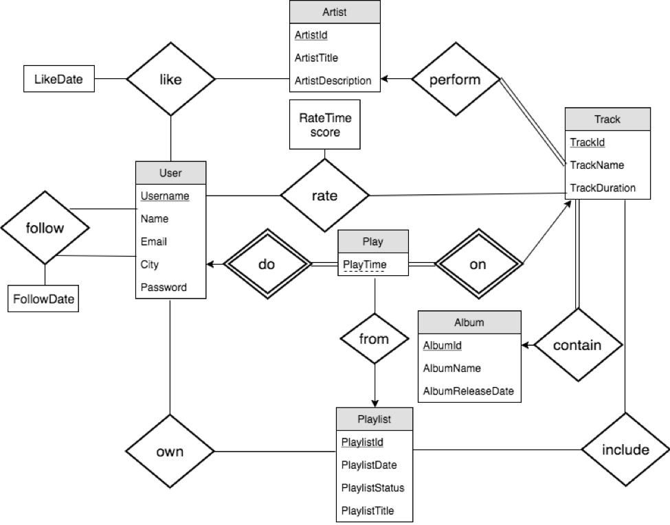
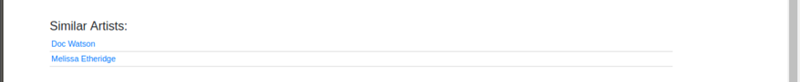

Sean Tsai & Jennie Yeh
December 2017
1. General Design
For this project, we designed a music streaming service using relational databases.
We have a User table, which contains user’s information including unique uname(username), name, email, city, and password.
We have a table for Artist, that contains artist id, artist name, and a short description. Each artist can perform multiple tracks. Each track has a tid, title, and duration. Each track can only be performed by one artist. Given the dataset provided, we decide to add a constraint that each track must be included in one album. And as a result, we remove the AlbumSong table from our previous design.
Each user can create playlists, that has a playlist id, date, status (public/private), and title. A playlist can include tracks from different artist.
We record information of each play of tracks by the users in the Play table. We keep track of the play time, and whether it is played from a playlist. When it is not played a playlist, we simply leave this information as NULL.
Users can also gives a score between 0 to 10 for each track. Users can like artists, and follow other users. We store the timestamps of time when these actions taken place.
Functionality:
- Search tracks, albums, artists, or users
- Access album info (including album title, artists, and release date), and all tracks in that album
- Access track info (including artist, album, and duration) and play the track
- Rate a track and access its average rating
- Access artist info (including title, and description), all his/her albums and top tracks
- Suggest similar artists based on the number of common fans (at least 3)
- Like/unlike an artist
- Follow/unfollow an user
- Display a user’s profile, artists he/she likes, users he/she follows, and his/her playlists
- Create playlists, which can be either public or private
- Add/remove tracks into/from an playlist
- Display a customized user feed, including new tracks by artists he/she liked, playlists by users he/she follows (ordered by number of plays), top 10 tracks by average user ratings, and top 10 tracks by number of plays
2. Database Schema
This is the ER diagram of our design.

Here is the database schema we created:
User(Username, Name, Email, City, Password)
Artist(ArtistId, ArtistTitle, ArtistDescription)
Track(TrackId, TrackName, TrackDuration, TrackArtist, TrackAlbum)
Album(AlbumId, AlbumName, AlbumReleaseDate)
Playlist(PlaylistId, Username, PlaylistTitle, PlaylistDate, PlaylistStatus)
Follow(Username1, Username2, FollowDate)
Likes(ArtistId, Username, LikeDate)
Rate(Username, TrackId, Score, RateTime)
Play(Username, TrackId, PlayTime, PlaylistId)
PlaylistSong(PlaylistId, TrackId)
Foreign key constraints:
Track.TrackArtist is a foreign key referencing Artist.ArtistTitle.
Track.AlbumId is a foreign key referencing Album.AlbumId.
Playlist.Username is a foreign key referencing User.Username.
Follow.Username1 is a foreign key referencing User.Username.
Follow.Username2 is a foreign key referencing User.Username.
Likes.ArtistId is a foreign key referencing Artist.ArtistId.
Likes.Username is a foreign key referencing User.Username.
Rate.Username is a foreign key referencing User.Username.
Rate.TrackId is a foreign key referencing Track.TrackId.
Play.Username is a foreign key referencing User.Username.
Play.TrackId is a foreign key referencing Track.TrackId.
Play.PlaylistId is a foreign key referencing Playlist.PlaylistId.
PlaylistSong.PlaylistId is a foreign key referencing Playlist.PlaylistId.
PlaylistSong.TrackId is a foreign key referencing Track.TrackId.
Assumptions:
- An artist can have multiple tracks, and a track can only belong to one artist.
- A track must belongs to an album.
- A user can only follow the same user, like the same artist, or rate the same track at most once.
- In Follow table, u1 follows u2.
3. Implementation details
We use LAMP stack (Linux, Apache, MySQL, PHP) for the implementation of this application.
User session and URLs:
We use PHP’s session functionality to maintain user session. If the user has not logged in, we disallow the user to access other pages and redirect the user to login page.
For URLs, we use get method for pages that contains publicly accessible information so that users can easily create bookmarks. These pages include user profile pages, search pages, track pages, artist pages, album pages, and playlist pages.
For other operations that contains confidential information, we use POST method to hide information and make sure the same operation won’t be repeated. These operations include to login, to register, to create playlist, to add a song to the playlist, to follow a user, to like an artist, to rate a track, etc.
SQL injection prevention:
To prevent SQL injection attacks, we used prepared statements to process all the SQL queries that requires user inputs.
Cross-site script prevention:
To prevent Cross-site script attacks, whenever we need to output print user inputs or store them in the database, such as register an account and create new playlist, we use htmlspecialchars() function to preprocess the input strings. Therefore, all malicious inputs will have their special characters removed and won’t be able to be executed as code.
Concurrence:
In our design, all users have to login before they can use the application. Therefore, all the reads and writes made by the user are specific to that user account and won’t affect other users. For example, the write operations we have are to register new account, to create new playlist, to follow another user, to like an artist, to rate a track, and to add/remove a track to the user’s playlist. These operations all involve current user’s id and therefore won’t conflict with other users operations. Furthermore, these operations are all atomic and do not involve multiple steps. If an operation fails, there is no need to rollback because there is no intermediate step.
4. Example sessions
This is the login page, where user can use their username and password to login. Users are required to login before they can access the app.
After users login, they will be taken to the discover page, where they can see a customized feed with contents that they might be interested in, including new tracks by artists they like, playlists by users they follow, top 10 tracks ordered by user ratings, and top 10 tracks ordered by number of plays.
Home page contains user’s information, the artists they like, other users they follow, and playlists they created.
Search page allows user to search for tracks, artists, albums or users based on their input keywords.
After the user clicks on the search button, the result will look like the picture below.
Track page display information about a track, including its artist, album, duration, and average user rating. The play record will be created once the user enter this page. We use API from Spotify to show a preview of the track.
The user will see the average rating of each track. The user can also rate the track. Note that user can only rate a track at most once. Subsequent rate will overwrite previous rate record.
The user can click on the “+” button to add a track to his playlist. To remove it from the playlist, just click on the “x” button.
Artist page displays information about the artist, including the artist’s title and description. The user can see the artist’s album and top 20 songs by number of plays. There is a link at the end allowing you to see all tracks by this artist. The user can like an artist, which will affect his/her customized feed.
The user can also see a list of similar artists, which are defined as artists who have a certain number of common fans.

Album page displays information about the album, including album name, artists (can be multiple artists), and all the tracks in this album.